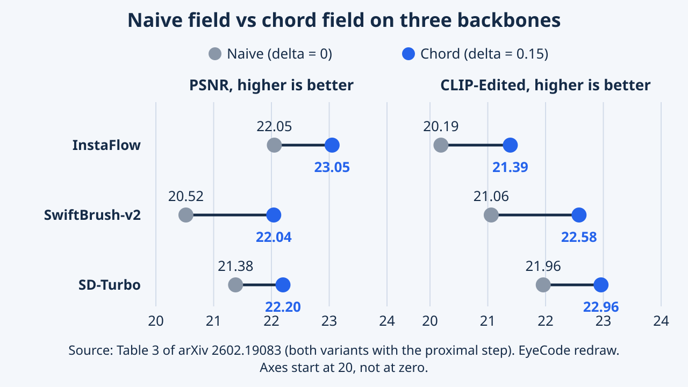

ChordEdit: One-Step Low-Energy Transport for Image Editing
ChordEdit performs text-guided image editing in a single step for one-step image generators, without training or inversion, using a low-energy control field derived from dynamic optimal transport. On PIE-bench the full version runs in 0.38 seconds.
One-step image generators are fast, but editing with a text prompt tends to distort objects and damage the background. ChordEdit smooths the editing signal through an optimal-transport view so that one large step becomes safe. This article reads the method, the numbers verified against the paper, and what the paper does and does not claim.
Overview
ChordEdit changes a picture from a text description (for example, a dog into a lion) in one quick computation, so it feels almost instant. Fast image generators usually go wrong when asked to edit this way: the animal warps and the background falls apart. ChordEdit fixes this by averaging two nearby opinions of the model instead of trusting one shaky opinion. The paper received a Best Student Paper Honorable Mention at CVPR 2026, according to the conference's official Best Papers page. That is the official fact; the commentary around it is EyeCode's own.
ChordEdit edits an image from a text prompt using a one-step text-to-image generator such as SD-Turbo, InstaFlow or SwiftBrush-v2. It needs no training and no inversion (a step that maps the real image back to noise). Input: a source image, a source prompt and a target prompt. Output: the edited image.
The authors claim four contributions: a dynamic optimal-transport view of editing; the Chord Control Field, a smoothed editing signal that is stable enough for one large step; an optional proximal refinement; and PIE-bench experiments with ablations. It matters because interactive editing needs speed and a stable result at once.
Lu, Chen, Guo, Li, Wang and Shi (Guangdong University of Technology, Huizhou University, Shenzhen University, Peking University; Yang Shi is the corresponding author) propose a control-field estimator for training-free, inversion-free editing that runs on one-step generators from both the noise-prediction family (SD-Turbo) and the velocity family (InstaFlow). The paper offers a dynamic optimal-transport (Benamou-Brenier) formulation, a closed-form window estimator reduced to a causal two-point blend, and theory on energy contraction, Euler error and bias-variance (appendices B to E).
On recognition: the student Honorable Mention comes from the CVPR 2026 Best Papers page. The project page, repository and talk video also label the paper an Oral; we cite that only as author-posted information.
Positioning: the comparison table mixes editors built on different base models (SD3, SDXL-Turbo, SD1.4, PeRFlow-SD1.5, SwiftBrush-v2), so backbone and editing rule are entangled. The authors note this and add a same-backbone comparison with SwiftEdit on SwiftBrush-v2 and naive-versus-Chord comparisons on three backbones.
Research Problem
One-step generators are very fast, but when asked to edit a picture they tend to warp the object and wreck the background. Imagine crossing a bumpy road in one huge stride instead of many small steps: every little error adds up and you fall.
Training-free, inversion-free editors such as FlowEdit and InfEdit build an editing field by subtracting the model's prediction under the source prompt from its prediction under the target prompt. Over many steps this is stable. Forced into one step, the paper reports two failures (Figure 3): the edited object is distorted, and the background and surrounding structures break up.
The authors' explanation is that distilled one-step models respond very non-linearly to the text condition, so the difference of two large, diverging predictions is an erratic, high-energy field, and one large integration step accumulates its error. The one-step alternative SwiftEdit avoids this by training a dedicated inversion network, which gives up the training-free, model-agnostic setting.
Formulation. Time t in [0,1], with t=1 the source endpoint and t=0 the target. A text-to-image model defines a flow with drift v(x,t,c). Editing means moving x_src (a sample under the source prompt) to x_tar (under the target prompt); the ideal control is the residual Δv = v(x,t,c_tar) - v(x,t,c_src).
Because the state at an arbitrary t is not available, the authors fix the anchor at the clean source latent and query the model at a synthetic noisy proxy drawn from a forward noising kernel. The observable field is R(x_τ,t) = E[B_t ΔQ(z,t)], where Q is the model output and B_t a time-only linear map into velocity units. The ideal field u_t is the minimiser of the Benamou-Brenier kinetic energy under a continuity constraint; it is unobserved. The paper models R as u_t plus zero-mean noise, so the naive choice u = R is a noisy, high-energy estimate.
Prior approaches (appendix A): training-free with inversion (PnP, null-text and negative-prompt inversion, ProxEdit), training-free without inversion (FlowEdit, InfEdit, stabilised by multi-step averaging), few-step accelerations (TurboEdit, InstantEdit, 4 to 8 steps), and training-based one-step editing (SwiftEdit; COTFlow, which the appendix says is limited to 64x64 resolution).
Key Idea
Instead of trusting one measurement of the edit direction, ChordEdit asks the model at two nearby moments and takes a weighted average. Think of estimating a slope by the chord joining two points on a curve rather than the jittery tangent at a single point: the answer is steadier.
The core idea is the Chord Control Field. Take the naive editing field at two times, t-δ and t, and blend them with weights t/(t+δ) for the earlier point and δ/(t+δ) for the later one. This is temporal smoothing: it lowers the field's energy and variance, so one large step along it is safer.
Tiny example: with t=0.90 and δ=0.15 the weights are about 0.857 and 0.143. With δ=0 the blend is the naive field. The name comes from replacing a wobbly curve by the chord between two of its points. Both queries fit in one batch, so the transport step still costs one network evaluation.
Derivation. On the window [t-δ,t] the estimator is the minimiser of a strictly convex surrogate Φ(u) = t‖u - û_{t-δ}‖² + ∫‖u - R(ξ)‖² dξ: a recursive energy prior around the previous estimate plus agreement with new measurements. The exact minimiser is $u^\star = \frac{t}{t+\delta}\hat u_{t-\delta} + \frac{1}{t+\delta}\int R\,d\xi$. Two first-order causal approximations ($\hat u_{t-\delta}\approx R(t-\delta)$, $\int R\approx \delta R(t)$) give the practical field $\hat u_t = (tR(t-\delta)+\delta R(t))/(t+\delta)$, a causal one-sided kernel smoothing.
Guarantees (appendices D, E). As a convex combination it is an L2 contraction by Jensen's inequality, and the sup-norms of the field, its time derivative and its spatial gradient do not grow; the Euler consistency proxy C(u) therefore does not exceed the naive one, which tightens the global O(h) error bound for the one-step case. For a causal non-negative kernel the first moment is positive, so the bias is O(δ); the appendix's classic optimal bandwidth, of order the one-fifth power of the noise-to-curvature ratio, is derived for a symmetric second-order kernel, not for the causal one actually used. The gap to the optimal Benamou-Brenier control is bounded under an H^1 smoothness assumption. The default δ=0.15 comes from the hyperparameter sweeps rather than from these formulas.
Methodology

The recipe: keep the original image, add a little noise, ask the model twice at two nearby moments (once with the source prompt, once with the target prompt), blend the answers into one edit direction, take one step along it, and optionally refine once more so the new meaning comes through more clearly.
Inputs are the source image latent (in the VAE latent space), a source prompt and a target prompt. The anchor is the clean source latent, so no inversion is needed. With one noise sample (n=1), the model is queried at t=0.90 and t-δ=0.75 under both prompts. The prompt difference is converted by a time-only linear map into velocity units, which lets noise-prediction models (SD-Turbo) and velocity models (InstaFlow) share one template.
The two results are blended into the chord field û, and the transport step is x_pred = x_src + λû with λ=1. All intermediate quantities are computed in one batch, so this counts as 1 NFE (network function evaluation). The optional proximal refinement is one more forward pass with the target prompt only, at t_c=0.30, using the model's x0 prediction with a fixed noise draw. With it the method is NFE=2; without it, NFE=1. The authors ran everything on a single 24 GB NVIDIA Titan GPU.
Parameterisations. For noise-prediction models B_t multiplies by a schedule-dependent scalar, σ̇ - (α̇/α)σ in general, which simplifies to -α̇/(ασ) under a variance-preserving schedule; for velocity models B_t is the identity. x0, v, score and consistency heads fit the same template (appendix C). The map divides by α(t), so queries stay away from t near 1; derivatives use first-order finite differences.
Defaults of the NFE=2 version: n=1, t=0.90, δ=0.15, λ=1.00, t_c=0.30. The authors describe δ as balancing stability against semantic strength, t and λ as controlling semantic intensity of the transport, and t_c as amplifying the final edit. The energy metrics are measured before the proximal step, which is not part of the transport. A multi-noise variant (Algorithm 2) averages the per-sample chord fields; the paper keeps n=1 for all benchmarks. Code is stated to be in the supplementary material, and a public repository exists.
Experiments & Results
| Method (base model) | PSNR | MSE | LPIPS | CLIP-Edited | NFE | Runtime (s) | VRAM (MiB) |
|---|---|---|---|---|---|---|---|
| Direct Inversion + MasaCtrl | 21.78 | 7.99 | 87.38 | 21.38 | 100 | 79.10 | 12272 |
| Direct Inversion + PnP | 21.43 | 8.10 | 106.26 | 22.63 | 100 | 28.03 | 9262 |
| FlowEdit (SD3) | 22.17 | 7.69 | 104.81 | 23.69 | 33 | 7.22 | 17140 |
| TurboEdit (SDXL-Turbo) | 21.44 | 9.49 | 108.60 | 21.79 | 4 | 2.69 | 13826 |
| InfEdit (SD1.4) | 24.14 | 6.82 | 55.69 | 21.88 | 4 | 1.41 | 6502 |
| InstantEdit (PeRFlow-SD1.5) | 23.80 | 4.21 | 60.92 | 21.82 | 8 | 1.30 | 16270 |
| SwiftEdit (SwiftBrush-v2) | 21.71 | 8.22 | 91.22 | 21.85 | 2 | 0.54 | 15060 |
| ChordEdit (SwiftBrush-v2) | 22.04 | 7.13 | 111.22 | 22.58 | 2 | 0.38 | 6988 |
| ChordEdit w/o prox (SD-Turbo) | 23.89 | 5.05 | 88.36 | 21.87 | 1 | 0.20 | 6988 |
| ChordEdit (SD-Turbo) | 22.20 | 6.84 | 128.25 | 22.96 | 2 | 0.38 | 6988 |
| Backbone | Field | PSNR | MSE | LPIPS | CLIP-Edited |
|---|---|---|---|---|---|
| InstaFlow (with prox) | Naive (δ=0) | 22.05 | 10.45 | 103.33 | 20.19 |
| InstaFlow (with prox) | Chord (δ=0.15) | 23.05 | 5.45 | 53.33 | 21.39 |
| SwiftBrush-v2 (with prox) | Naive (δ=0) | 20.52 | 17.17 | 127.43 | 21.06 |
| SwiftBrush-v2 (with prox) | Chord (δ=0.15) | 22.04 | 7.13 | 111.22 | 22.58 |
| SD-Turbo (with prox) | Naive (δ=0) | 21.38 | 9.73 | 131.30 | 21.96 |
| SD-Turbo (with prox) | Chord (δ=0.15) | 22.20 | 6.84 | 128.25 | 22.96 |
| SD-Turbo (w/o prox) | Naive (δ=0) | 21.89 | 10.84 | 105.27 | 20.83 |
| SD-Turbo (w/o prox) | Chord (δ=0.15) | 23.89 | 5.05 | 88.36 | 21.87 |
| Method | Semantic alignment (%) | Preservation quality (%) |
|---|---|---|
| ChordEdit | 42.5 | 48.3 |
| FlowEdit | 25.3 | 7.1 |
| InfEdit | 19.6 | 35.4 |
| SwiftEdit | 12.6 | 9.2 |


On the PIE-bench test set, ChordEdit edits an image in roughly 0.2 to 0.4 seconds, about 19 times faster than FlowEdit, and keeps the background better than the naive approach. It does not win every measure: some methods keep the background more faithfully and one matches the new meaning slightly better. In the authors' own user study, people picked it most often.
Protocol. PIE-bench: 700 images in 10 editing categories, 512x512, with edit masks. Background fidelity: PSNR and MSE on the non-edited region, and LPIPS. Semantics: CLIP-Whole and CLIP-Edited. No method used protective masks, and each baseline ran on its officially specified model. Baselines: DDIM and Direct Inversion with MasaCtrl or PnP, FlowEdit, TurboEdit, InfEdit, InstantEdit and SwiftEdit (first table).
Headlines. The full SD-Turbo ChordEdit takes 0.38 s, NFE=2, 6988 MiB, with CLIP-Edited 22.96; FlowEdit takes 7.22 s and 17140 MiB with 23.69. The transport-only variant reaches PSNR 23.89 in 0.20 s. The Chord field beats the naive field on InstaFlow, SwiftBrush-v2 and SD-Turbo (second table). In the user study ChordEdit was chosen most often for semantics (42.5%) and preservation (48.3%) (third table).
Not uniform. InfEdit has higher PSNR (24.14) and far lower LPIPS (55.69) than full ChordEdit, FlowEdit has higher CLIP-Edited, and InfEdit uses less VRAM (6502 MiB).
Reading Table 1 against Table 4. Table 4 is the unabridged version: identical ChordEdit values, plus SSIM, structure distance, the naive rows and the InstaFlow rows. The InstaFlow variant (NFE=2, 6198 MiB) reaches PSNR 23.05 and LPIPS 53.33, so it beats InfEdit's LPIPS but not its PSNR, with CLIP-Edited 21.39 against 21.88. The paper's text claims 19x over FlowEdit (7.22/0.38), over 208x over Direct Inversion, at least 3.4x over the fastest few-step editor, and less than half SwiftEdit's VRAM on the same SwiftBrush-v2 model (6988 versus 15060 MiB). On that shared backbone the LPIPS is worse than SwiftEdit's (111.22 versus 91.22) while PSNR, MSE and CLIP-Edited are better.
Ablations. Removing the chord smoothing (Table 2): without prox, PSNR 21.89 to 23.89 and CLIP-Edited 20.83 to 21.87; with prox, PSNR 21.38 to 22.20 and CLIP-Edited 21.96 to 22.96. Adding prox to the Chord field costs 1.69 PSNR and gains 1.09 CLIP-Edited. Noise: Pareto fronts for n=1 to 4 nearly coincide and the n=1 front dominates the naive front even at n=4; over 20 seeds the coefficients of variation at n=1 are 0.20% (CLIP-Edited) and 0.07% (PSNR). Appendix sweeps: preservation metrics improve monotonically with δ; CLIP-Edited improves up to roughly δ 0.15 to 0.3 and drops beyond 0.3; larger t (0.80 to 1.00), larger t_c (0.1 to 0.5) and larger λ (0.8 to 2.0) raise semantics at the cost of fidelity. Energy plots show the naive field's energy rising and its PSNR collapsing as the step count approaches 1.
Qualitative evidence (Figures 3, 7, 8): the naive one-step field produces distorted objects and background breakup; ChordEdit stays close to the prompt while preserving the background, avoiding the identity failures the authors note for Direct Inversion + PnP. The user study used 150 participants, 30 prompts and four methods (ChordEdit, InfEdit, FlowEdit, SwiftEdit), 4,500 votes per criterion.
Limitations
ChordEdit does not win on every measure. Some methods keep fine background detail better, one matches the target meaning a little better, and the extra refinement step changes the background a bit more.
Reported by the authors
The paper has no limitations section. Its conclusion and Appendix I acknowledge that real-time, consistent edits could be used for deceptive content and that edits may inherit and amplify biases of the underlying pretrained model. The appendix also notes that δ above about 0.3 over-smooths and lowers CLIP, and that a stronger refinement (higher t_c) trades background fidelity for semantics.
EyeCode analysis (editorial interpretation)
From Table 1, ChordEdit does not lead every column: InfEdit has better PSNR, LPIPS and VRAM, and FlowEdit has higher CLIP-Edited. With the proximal step on SD-Turbo, the LPIPS gain over naive is small. The evidence is one benchmark and the authors' own runs; the text we read shows no failure cases of ChordEdit itself and no independent replication.
Reported by the authors
No dedicated limitations or failure-case section. Appendix I names three issues: misuse for deceptive or malicious media (made easier by quality and background preservation), inherited and possibly amplified bias from the pretrained backbone, and the fact that a training-free method cannot itself correct those biases. The authors suggest detection tools and media literacy as mitigation. Hyperparameter sweeps document over-smoothing for δ>0.3 and over-editing for strong refinement.
EyeCode analysis (editorial interpretation)
Metric trade-offs are real: full SD-Turbo ChordEdit has LPIPS 128.25, the highest (worst) value of every row in Table 1, and only slightly better than its naive counterpart (131.30). The user study compares four methods and does not include the slower multi-step baselines. Theory rests on modelling assumptions (an unbiased noisy measurement, local homogeneity, a recursive prior) that the paper does not test, and the causal kernel gives O(δ) rather than O(δ²) bias. Validation is on PIE-bench at 512x512, so we draw no conclusion for other resolutions, domains or backbones. We did not run the code.
Key Takeaways
Smoothing the edit direction by asking at two nearby moments makes one big step safe. The result is near-instant editing, though there is still a trade-off between keeping the background and changing the content.
Lessons from the paper:
- A naive difference of two prompt-conditioned predictions is a high-energy field that breaks in one step; smoothing it in time is enough to make a large step usable (Tables 2 and 3).
- The chord field is a convex blend of two queries, so it lowers energy without extra NFE because the queries share a batch.
- Separating transport from refinement gives a knob: without prox PSNR 23.89, CLIP-Edited 21.87; with prox PSNR 22.20, CLIP-Edited 22.96.
- Judge editors on quality, runtime and memory together: no method in Table 1 wins every column.
Suggested directions (EyeCode suggestions, not claims from the paper)
- Test whether the chord smoothing carries over to other backbones or to video editing, which the paper does not study.
Lessons: (1) an unobservable optimal-transport field can be replaced by a cheap causal estimator with explicit energy and error guarantees; (2) Table 2 isolates transport from refinement, a clean ablation design worth copying; (3) the knobs δ, t, λ and t_c each have a documented direction of effect (appendix F); (4) report naive-versus-method comparisons on the same backbone, as Tables 3 and 4 do, before comparing across backbones; (5) read Table 4, not only Table 1, to see where gains are modest (LPIPS with prox on SD-Turbo).
Suggested directions (EyeCode suggestions, not claims from the paper)
- Report per-category PIE-bench results and failure cases to locate where one-step editing still breaks.
- Try a symmetric or learned kernel or an adaptive δ per edit and measure the bias-variance trade-off the theory predicts.
- Check how the method behaves on real photos that fall outside PIE-bench.